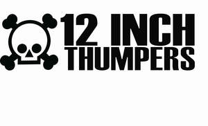

Trade Mark Journal No.2026/008 20 February 2026
UK00004333494 1 February 2026 (9,35,38,41)

- Class 9
- Music recordings; Downloadable music sound recordings; Tape recordings of music; Pre-recorded CDs featuring music; Downloadable digital music; Prerecorded music audio tapes; Downloadable music files; Downloadable musical sound recordings; Digital music downloadable from the Internet; Musical recordings; Musical sound recordings; Downloadable video recordings; Downloadable sound recordings; Prerecorded audio tapes featuring music.
- Class 35
- Merchandising; Online retail store services relating to clothing; Retail services connected with the sale of clothing and clothing accessories; Mail order retail services for clothing accessories; Promoting the sale of goods and services of others through the distribution of printed material and promotional contests; Promoting the sale of fashion goods through promotional articles in magazines; Online retail store services in relation to clothing; Retail services in relation to clothing accessories; Advertising services relating to the sale of goods; Online retail services relating to clothing; Mail order retail services for clothing; Retail services relating to clothing; Preparing promotional and merchandising material for others; Retail services in relation to clothing; Wholesale services relating to clothing; Retail services in relation to fashion accessories; Trade promotional services; Online retail services for downloadable and pre-recorded music and movies.
- Class 38
- Music broadcasting.
- Class 41
- Recording of music; Music recording; Music publishing and music recording services; Music performances; Performance of music; Live music concerts; Production of music; Music production; Music publishing; Publishing of music; Performance of music and singing; Music festival services; Performing of music and singing; Live music performances; Music entertainment services; Arranging of music performances; Music recording studio services; Music mixing services; Production of music shows; Live music shows; Arranging of music shows; Artistic management of music venues; Music library services; Music performance services; Music production services; Music publishing services; Provision of live music; Live musical concerts; Providing digital music from the internet; Presentation of musical concerts; Sound recording and video entertainment services; Entertainment in the form of recorded music (Services providing -); Musical concert services; Production of musical recordings; Music concerts; Providing digital music [not downloadable] from MP3 internet websites; Publication of music; Production of sound and music recordings; Digital music [not downloadable] provided from mp3 web sites on the internet; Providing online music, not downloadable; Rental of phonographic and music recordings; Providing digital sound recordings, not downloadable, from the internet; Entertainment services for sharing audio and video recordings.
Alan Richard Prosser